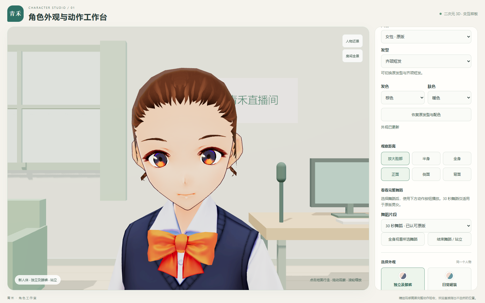
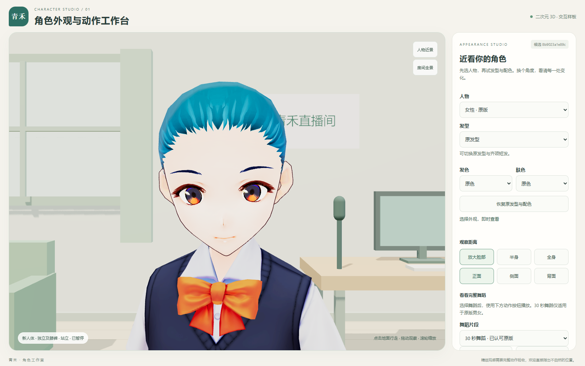
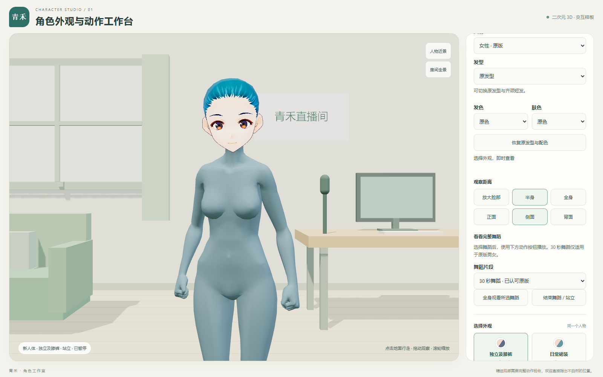

本页是最终低饱和配色与加大取景余量的实际固定版。齐颈短发仅原女可用；30秒舞仅原男女可用，保留原舞既有手臂/衣物问题。发型耳侧接触、自然度及普通电脑性能未由这次测试整体验收。
三条均连续原片，包含开头加载/准备及结尾站立。近景片使用实际控件换发型配色、表情、讲话、视线和reset；舞片没有暂停、改速或重制轨道。

每体都在模拟时间1.2s、自然表情、关闭附加动态后截图。服装按各自已有精确适配，穿衣图不夸大腰胯变化。

此为已有base中性材料诊断，保留衣片覆盖，不是裸色身体展示。

结果与范围 · 时钟与文件摘要 · 原始检查记录 · b44旧配色与错误处理证据（旧版本）